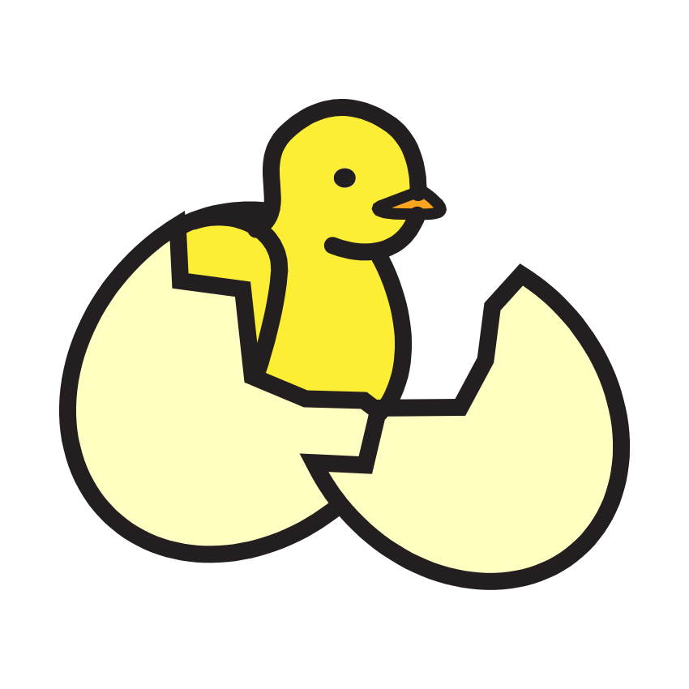
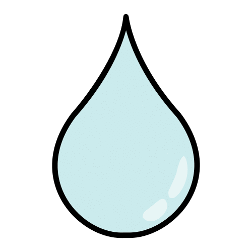
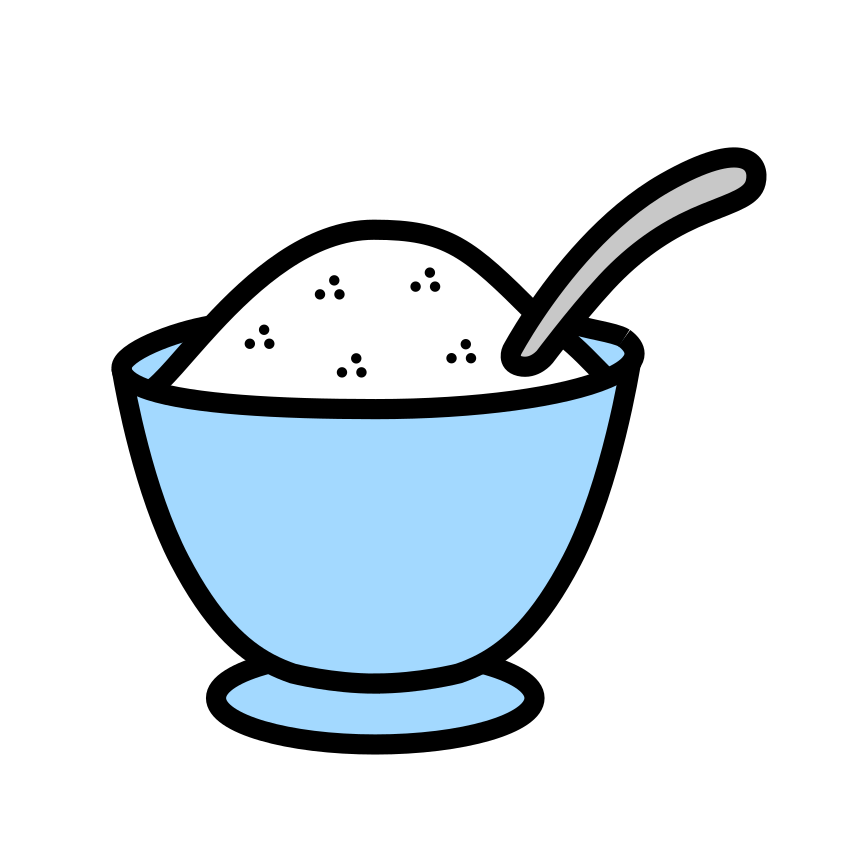
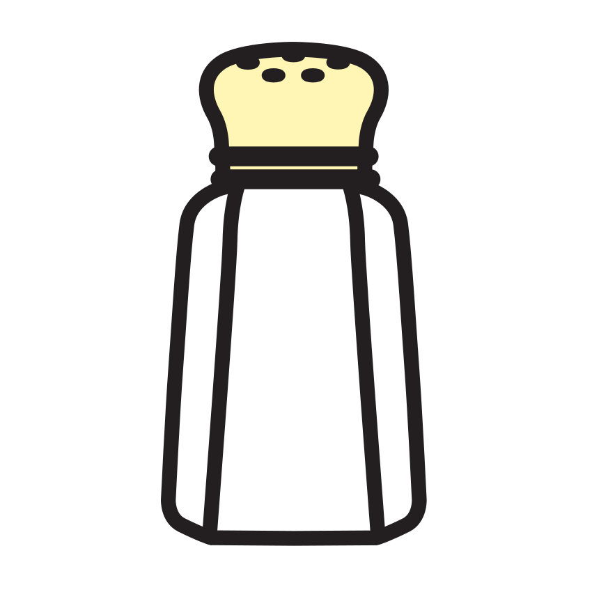

Consigne :1. Entoure en rouge quand tu entends « sss » comme le serpent, en vert quand tu entends « chhh » comme le chat qui souffle. 2. Mets une croix là où tu entends le son. 3. Colorie les images où tu entends « vvv ».
1
salade
chenille
cheval
poussin
vache
souris
2Où est le son ? Je mets une croix : au début ◻, au milieu ◻ ou à la fin ◻.
Mot
Début
Milieu
Fin
poussin
salade
vache
3
Compétence : discriminer et localiser les phonèmes [s], [ch], [v].A ☐ · EC ☐ · NE ☐
Prénom : Date :
Période 4 · Fiche élève 2
Écrit — encodage (éval. 4.7)
J’écris les étiquettes du potager
Consigne : Dis le mot lentement, puis écris les lettres que tu entends pour fabriquer l’étiquette de chaque semis. Une lettre par case.
RADIS
SALADE
TOMATE
VACHE (aide de la maîtresse pour « CH »)
2J’écris les syllabes que la maîtresse dicte.
3J’entoure SALADE chaque fois qu’il est bien écrit.
SALADESALADESALDAESALADESABADESALADE
Compétence : encoder des mots transparents en autonomie et expliquer sa stratégie.A ☐ · EC ☐ · NE ☐
Prénom : Date :
Période 4 · Fiche élève 3
Écriture cursive (éval. 4.5)
J’écris en attaché comme un grand
Consigne :1. Écris ton prénom en attaché, tout seul, sans modèle. 2. Recopie les mots « radis » et « salade » en attaché.
1Mon prénom en attaché, sans modèle :
2Je recopie les mots du potager.
modèle : radis (écrit à la main)
modèle : salade (écrit à la main)
3Je copie la phrase de la maîtresse.
modèle (à la main) : la vache a un veau.
Compétence : écrire son prénom en cursive sans modèle ; copier des mots et une phrase.A ☐ · EC ☐ · NE ☐
Prénom : Date :
Période 4 · Fiche élève 4
Mathématiques — vers 10 (éval. 4.8)
Les boîtes à œufs de la fermière
Consigne :1. Chaque boîte doit avoir 10 œufs : dessine les œufs qui manquent et écris combien tu en as ajouté. 2. Les poussins avancent 2 par 2 : écris les nombres qui manquent.
1Je complète les boîtes de 10 œufs.
La boîte de 10
Il manque…
▢▢▢
œufs
▢▢▢▢▢▢
œufs
▢▢
œufs
2Je compte de 2 en 2 avec les poussins .
2
4
8
12
16
20
3
4 + = 10 · 7 + = 10 · 2 + = 10
★ Défi : le lapin recule de 2 en 2 : 20 · 18 · · ·
Compétences : compléments à 10 ; suite de 2 en 2 jusqu’à 20.A ☐ · EC ☐ · NE ☐
Prénom : Date :
Période 4 · Fiche élève 5
Mathématiques — problèmes (éval. 4.9)
Je range et je partage la récolte
Consigne :1. Entoure les œufs par paquets de 2, puis écris combien tu as fait de paquets. 2. Partage les 9 graines entre les 2 pots en les reliant : le même nombre dans chaque pot. Entoure la graine qui reste toute seule.
1J’entoure par 2 et je compte les paquets.
J’ai fait paquets de 2.
2Je partage 9 graines entre 2 pots (je relie), j’entoure le reste.
Chaque pot reçoit graines. Il reste graine.
3Chaque poule a 2 poussins. Il y a 3 poules : dessine les poussins et écris le total.
En tout : poussins.
Compétences : groupements par 2 ; partage équitable avec reste.A ☐ · EC ☐ · NE ☐
Prénom : Date :
Période 4 · Fiche élève 6
Mathématiques — la règle (éval. 4.10)
Je trace les rangs du potager
Consigne : Avec ta règle, relie chaque graine à son légume par un trait bien droit, puis trace les 3 rangs du potager en reliant les points.
1Je relie à la règle.
2Je trace les rangs : je relie les points à la règle.
3Je relie les 3 points à la règle pour tracer le toit du poulailler.
Compétence : utiliser la règle comme outil pour tracer des traits droits.A ☐ · EC ☐ · NE ☐
Prénom : Date :
Période 4 · Fiche élève 7
Le monde — cycles de vie (éval. 4.13)
De l’œuf à la poule, de la graine à la fleur
Consigne :1. Les images sont en désordre : écris 1, 2, 3, 4 dans les petites cases pour remettre chaque histoire dans l’ordre. 2. Entoure ce dont la graine a besoin pour pousser.
1Je numérote dans l’ordre.

2J’entoure ce dont la graine a besoin.

de l’eau
de la lumière
du chocolat
la télévision
Compétences : ordonner les étapes d’un cycle de vie ; connaître les besoins d’une plante.A ☐ · EC ☐ · NE ☐
Prénom : Date :
Période 4 · Fiche élève 8
Le monde — mélanges (éval. 4.14)
Ça disparaît dans l’eau… ou pas ?
Consigne : Après notre expérience en classe, mets une croix dans la bonne colonne : « on ne le voit plus » (il s’est dissous) ou « on le voit encore » (il ne s’est pas dissous).
Dans l’eau…
On ne le voit plus
On le voit encore

le sucre

le sel
le sable
les graines
2Je dessine notre expérience (les verres, l’eau, ce qu’on a versé).
3
Le sucre dissous est toujours dans l’eau (elle est sucrée !).
OUI
NON
Le sable disparaît complètement dans l’eau.
OUI
NON
Compétence : distinguer les solides qui se dissolvent dans l’eau de ceux qui ne se dissolvent pas.A ☐ · EC ☐ · NE ☐
Crédits des images
Les illustrations de ce cahier sont des pictogrammes Mulberry Symbols (Paxtoncrafts Charitable Trust, licence CC BY-SA 4.0, mulberrysymbols.org) et des pictogrammes ARASAAC (auteur : Sergio Palao, propriété du Gouvernement d’Aragon, Espagne, licence CC BY-NC-SA, arasaac.org). Merci à leurs auteurs et autrices.
 salade
salade
 chenille
chenille
 cheval
cheval
 poussin
poussin
 vache
vache
 souris
souris


 recule de 2 en 2 : 20 · 18 · · ·
recule de 2 en 2 : 20 · 18 · · · 


 le sable
le sable